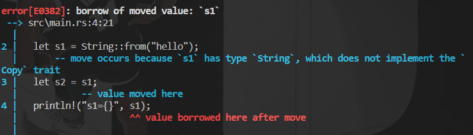
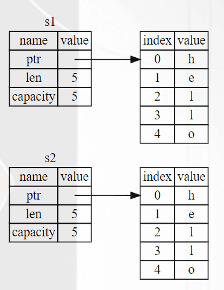
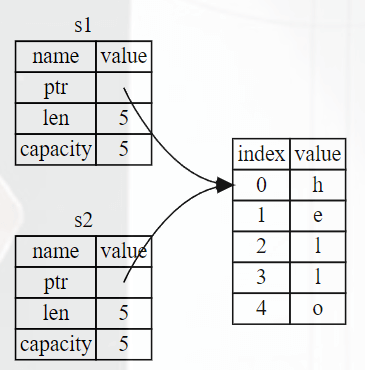
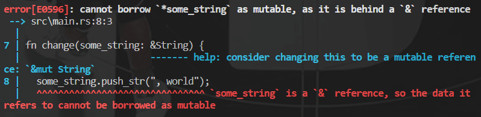
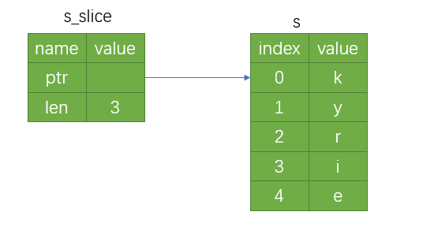
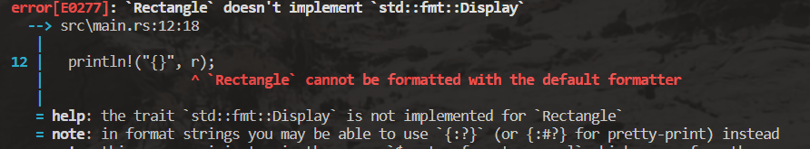
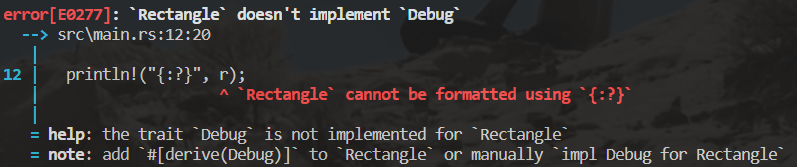
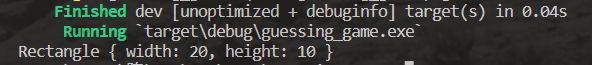
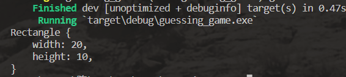
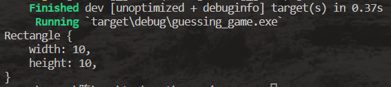

Rust
Hello World!
从打印Hello World入手
1 | fn main() { |
分析这个程序；
- 定义了一个
main函数，main函数是一个特殊的函数，在可执行的Rust程序中，他总是最先运行的代码。 println!调用了一个Rust宏。如果是调用普通函数，则不需要!。当看到符号!的时候，就意味着调用的是宏而不是普通函数
编译和运行是彼此独立的步骤
在运行Rust程序之前，必须使用Rust编译器编译他，输入命令行：rustc xxx.rs。就可以发现在目录下多了一个xx.exe的可执行文件，输入命令行：.\xxx.exe 或 .\xxx即可运行文件
然后就可以在控制台看到打印出的Hello World!
Rust是一种预编译静态类型语言，这意味着你可以编译程序，并将可执行文件送给其他人，他们无需安装Rust就可以运行。与之不同的是例如JavaScript的动态语言，它们只需要一句命令就可以编译和运行程序，但是需要安装相应的环境
Cargo
Cargo是Rust的构建系统和包管理器，它可以为我们处理很多任务，比如构建代码、下载依赖库并编译这些库
使用Cargo创建项目
输入命令行：
cargo new xxx（项目名）即可
例如我们新建一个名为hello_cargo的项目，输入命令行之后就可以在根目录中看到hello_cargo目录，在hello_cargo目录中有一个src目录和一个Cargo.toml文件
在创建项目的同时，还会在项目目录初始化以恶搞git仓库，以及一个.gitignore文件
Cargo.toml文件
这个文件是使用TOML格式，是Cargo配置文件的格式
Cargo.toml文件内容：
1 | [package] |
[package]是一个片段标题，表示下面的语句用来撇脂一个包，接下来的三行是Cargo编译程序所需的配置：项目名称、项目版本以及使用的Rust版本[dependencies]是罗列项目依赖的片段的开始。在Rust中，代码包被称为crates
在src目录下会有一个Cargo为我们生成的main.rs程序，里面实现的一个Hello World程序
构建并运行Cargo项目
方法一：
1 | cargo build |
在使用cargo build命令之后会创建一个可执行文件targrt\debug\xxx.exe
方法二：
1 | cargo run |
cargo run的效果和使用方法一的效果完全相同
cargo check命令
Cargo还提供了一个cargo check命令，它可以快速检查代码确保其可以编译，但并不产生可执行文件
通常
cargo check比cargo build快得多，因为它省略了生成可执行文件的步骤。一般可以在编写代码时持续的进行检查，它可以让你快速了解现在的代码能不能正常编译
发布构建
当项目最终准备好发布时，可以使用cargo build --release来优化编译项目
这会在 target/release 而不是 target/debug 下生成可执行文件。这些优化可以让 Rust 代码运行的更快，不过启用这些优化也需要消耗更长的编译时间
变量与可变性
在Rust中变量默认是不可以改变的，但是仍然可以使用可变变量
变量的默认不可改变是Rust提供的优势之一，让开发者充分利用Rust提供的安全性和简单并发性来编写代码
示例：当试图改变一个变量的值时，rust编译器会报错
1 | fn main() { |
打印变量值的方法：
println!("{x}")println!("{}", x)
使变量的值可以改变
开发者可以通过在变量名前面添加mut来使其可变
示例：
1 | fn main() { |
常量
常量是绑定到一个名称的不允许改变的值，常量不光默认不能改变，它总是不能改变
声明常量使用const，并且必须注明值的类型
常量只能被设置为常量表达式，而不可以是其他任何只能在运行时计算出的值
示例：
1 | const THREE_HOURS_IN_SECONDS: u32 = 60 * 60 * 3; |
- Rust对常量的命名约定是单词全部使用大写，在单词之间加下划线
- 编译器可以在编译时简单计算一些操作
数据类型
在Rust中，每一个值都属于某一个数据类型。Rust是静态类型语言，也就是说在编译时就必须知道所有变量的类型。
Rust有两类数据类型子集：标量和复合
标量类型
标量类型代表一个单独的值。Rust有四种基本的标量类型：
- 整型
- 浮点型
- 布尔型
- 字符类型
整型
整型又分为有符号和无符号，也就是说有符号的能表示负数和正数，而无符号的只能表示正数。
Rust中的整型
| 长度 | 有符号 | 无符号 |
|---|---|---|
| 8bit | i8 |
u8 |
| 16bit | i16 |
u16 |
| 32bit | i32 |
u32 |
| 64bit | i64 |
u64 |
| 128bit | i128 |
u128 |
| arch | isize |
usize |
每一个有符号的变体可以存储从-2^(n-1)到2^(n-1) - 1在内的数字，这里的n是变体使用的比特位数。也就是说i32可以存储-2^31到2^31 - 1在内的数字。无符号的变体可以存储从0到2^n - 1的数字
Rust的默认整型类型是
i32
其他表现形式：
- 可以使用例如
5u8来指定类型 - 可以使用
_作为分隔符方便读数，例如1_000等价于1000
整型溢出
比如一个u8,他可以存放0到255的值，当给他赋值256时，就会出现整型溢出
在debug模式下，Rust会检查出问题，并panic（程序因错误而退出）
在release模式下，Rust不检测溢出，会进行一种二进制补码回绕的操作。就是比此类型能容纳的最大值还要大的值会回绕到最小值，例如 256 回绕到 0，257 回绕到 1
浮点型
Rust的浮点类型是f32和f64，默认是f64
示例：let x: f32 = 3.2;
布尔型
Rust中的布尔类型使用bool表示，Rust的布尔类型有两个可能的值：true 和 false
示例：let f: bool = false;
字符类型
Rust中的字符类型使用char表示，用单引号声明char字面量，使用双引号声明字符串字面量。
Rust中的char类型的大小为四个字节，代表一个Unicode标量值
示例：
1 | let x = 'x'; |
复合类型
复合类型可以将多个值组合成一个类型。Rust有两个原生的复合类型：元组（tuple） 和 数组
元组类型
元组是一个将多个其他类型的值组合进一个复合类型的主要方式
元组长度固定，一旦声明，其长度不能改变
我们使用包含在圆括号中的逗号分隔的值列表来创建一个元组，元组的每一个位置都有一个类型，每个位置的类型不必相同
示例：
1 | fn main() { |
获取元组中单个值的方法
- 模式匹配
- 解构
解构
1 | fn main() { |
模式匹配
使用.后跟值的索引来直接访问它们
1 | fn main() { |
不带任何值的元组叫做单元元组。这种值和对应的类型都写做
()，表示空值或空的返回类型
数组类型
包含多个值，且每个元素的类型都必须相同的是数组，Rust的数组长度是固定的
示例：
1 | fn main() { |
其他表示方法：
let a: [i32; 5] = [1, 2, 3, 4, 5];在方括号中包含每个元素的类型，后跟分号，再后跟数组元素的数量let a = [3; 5];通过在方括号中指定初始值加分号再加元素个数的方式来创建一个每个元素都为相同值的数组
函数
Rust中使用fn关键字来声明新函数。Rust代码中的函数和变量名风格是所有字母都小写并使用下划线分隔单词
示例：
1 | fn main() { |
Rust不关心函数定义所在的位置，只要函数被调用时出现再调用之处可见的作用域内就行，所以上述代码中say_hi函数定义在main函数之前也可以被调用
参数
在给函数签名中添加参数时，需要声明每个参数的类型
示例：
1 | fn main() { |
语句和表达式
在Rust中语句和表达式是有区别的，这不同于其他语言
语句（Statements）：执行一些操作但不返回值的指令
表达式（Expressions）：计算并产生一个值
示例：一个赋值语句let x = 6;就是一个语句、函数定义也是语句
语句不返回值，所以在Rust中
let x = y = 6;的写法是不合法的
表达式可以是语句的一部分
语句let x = 6;中的6是一个表达式，他计算出的值是6。
函数调用也是一个表达式、宏调用也是一个表达式、用大括号创建的一个新的块作用域也是一个表达式
注意：
表达式的结尾没有分号，如果在表达式的结尾加上分号，它就变成了语句，而语句不会返回值
函数返回值
需要声明返回值的类型
声明方法：在箭头->后声明它的类型
示例：
1 | fn five() -> i32 { |
在Rust中，函数的返回值等同于函数体最后一个表达式的值
使用return关键字修饰指定值，可以从函数中提前返回
大部分函数隐式的返回最后的表达式
示例：
1 | fn num_plus(x: i32) -> i32 { |
上述代码可以正常执行并打印结果，但是如果在x + 1后面加上分号;，那么就会报错
在前面我们说过，表达式的结尾是没有分号的，加了分号之后x + 1;就变成了语句，不会返回值。
但是num_plus函数又要求返回一个类型是i32的值，所以会报错
if表达式
在Rust中的if表达式和JS等语言的区别在于：
- 判断条件不需要用括号包裹
- 判断条件必须显式的使用
bool值，它能自动将非布尔值转化为布尔值
示例：
1 | fn main() { |
在let语句中使用if
因为if是一个表达式，我们可以将它在let语句的右侧使用
示例：
1 | fn main() { |
循环
在Rust中循环主要有三种：
- loop
- while
- for
loop
在loop关键字后面跟一个中括号，在其中书写循环逻辑。
可以使用break或continue来跳出循环
示例：
1 | fn main() { |
将期望的返回值放在break语句中，在跳出循环时可以将它返回
示例：
1 | fn main() { |
循环标签
在多重loop循环时，我们可能不想要跳到上一层循环，这个时候可以使用循环标签
在loop关键词前面加上循环标签，并在break或continue时指定要跳到哪个循环
示例：
1 | fn main() { |
循环标签组成：' + 自定义字符串
while
while循环和JS中的基本相同，就是判断条件处不需要加括号，且判断条件必须是显式的bool值
1 | fn main() { |
for
Rust中的for循环和JS有一定的差距
示例：
1 | fn main() { |
使用标准库Range和for循环来生成并打印从一个数字开始到另一个数字之前所有的数字序列（前闭后开）
1 | fn main() { |
所有权
所有权（系统）是 Rust 最为与众不同的特性，对语言的其他部分有着深刻含义。它让 Rust 无需垃圾回收（garbage collector）即可保障内存安全
程序管理其运行时使用计算机内存的方式：
- 一些语言具有垃圾回收机制，会自动寻找不再使用的内存
- 一些语言要程序员手动分配和释放内存
- Rust通过所有权管理系统，在编译时会根据一系列规则进行检查。如果违反了这些规则，程序不能运行
所有权总基于一个常用的数据结构：栈与堆
栈和堆都是代码在运行时可提供使用的内存，但是他们的结构不同
所有权中的栈：存入栈中的所有数据都必须占用已知且固定的大小
所有权中的堆：存放在编译时大小未知或大小可能变化的数据
堆是缺乏组织的：当向堆放入数据时，要请求一定大小的空间。
内存分配器在堆的某处找到一块足够大的空位，把它标记为已使用，并返回一个表示该位置地址的指针。这个过程叫在堆上分配内存
因为 指向放入堆中数据的指针 是已知且大小固定的，所以可以将该指针存储到栈中
跟踪那部分2代码正在使用堆上的哪些数据，最大限度的减少堆上的重复数据的数量，以及及时清理堆上不再使用的数据确保不会耗尽空间，这些问题就是所有权系统要处理的
所有权规则
谨记下面的规则：
Rust中的每一个值都有一个所有者
值在任一时刻有且只有一个所有者
当所有者（变量）离开作用域，这个值将被丢弃
变量作用域
通过一个示例来初步了解变量的作用域：我们定义一个整型a，来看看它的作用域:
1 | fn main() { |
当变量离开作用域的时候，Rust会调用一个特殊的函数drop来释放内存
之前说的字符串字面量类型只能存储已知的且大小固定的值，在Rust中还提供了类型String（具体之后再说）
String这个类型管理被分配到堆上的数据，所以可以存储在编译时未知大小的文本
使用from函数基于字符串字面量创建String：
1 | let s = String::from("hello"); |
变量和数据的交互：移动
多个变量采用不同的方式和同一数据进行交互是十分常见的
示例：
1 | fn main() { |
上面的例子中我们很容易理解，来看看下面的例子：
1 | fn main() { |
控制台的结果：结果就是报错了！

这两段代码看上去是类似的，我们认为第二段代码应该做的是：生成一个x的拷贝，并将它赋值给y。但事实好像并不是这样
String类型的变量由三部分组成：指向存放字符串内容内存的指针、字符串长度、容量
左边的变量被保存在栈上，右边的字符串内容则被保存在堆上
对于拷贝之后可能的内存表现形式：
- 将堆中的数据也拷贝一份，然后s2中的指针指向新拷贝的数据
 - s2只拷贝s1栈中的内容，s1、s2指向同一块堆内存中的数据

分析：
- 对于第一种方法来说，如果堆中的数据比较大，那么拷贝堆中的数据就会影响运行时的性能
- 对于第二种方法来说，我们知道当变量离开作用域时，Rust会调用
drop函数清理变量的堆内存。这就导致了一个问题：当s1、s2离开作用域时，他们都会尝试释放相同的堆内存，这就造成了二次释放，它会导致内存污染，潜在的安全漏洞
Rust的解决方法：
在let s2 = s1后，Rust认为s1不再有效，因此Rust在s1离开作用域不清理任何东西
我们应该都知道浅拷贝，那么Rust拷贝指针、长度和容量而不拷贝数据看上去就像是浅拷贝。
但是Rust同时使第一个变量无效了，这个操作被称为移动
对于let x = 5; let y = x;此类的拷贝，由于x是被保存在栈上的数据，所以不存在上述的问题
变量和数据的交换方式：克隆
有时候我们确实不仅需要复制栈上的数据，还需要复制堆上的数据。这个时候可以使用clone函数
1 | fn main() { |
所有权与函数
将值传递给函数和给变量赋值的原理类似，向函数传递值可能会移动或复制
示例：当尝试在func函数调用后使用s时，会抛出错误
1 | fn main() { |
示例：当尝试在func函数调用后使用a时，可以打印出a的值
1 | fn main() { |
上述两个示例的结果就和变量赋值相同，看数据被存放在栈中还是堆中
返回值与作用域
返回值也可以转移所有权
示例：变量s先
1 | fn main() { |
当我们将值传入，但又想接着使用它，除此之外我们可能想返回函数体中产生的一些数据。这个时候可以使用元组
1 | fn main() { |
虽然可以实现我们的要求，但是这样太繁琐复杂了。
有没有方法可以让函数使用一个值但是不获取它的所有权？
引用和借用
我们将某个变量传给函数时，往往只是想使用一下它，而不是获取它的所有权。这个时候就可以使用引用
引用：像是一个指针，因为它是一个地址，我们可以通过它访问存储于该地址的属于其他变量的数据
在变量前使用&来表示引用，它允许你使用值但不获取其所有权
示例：
1 | fn main() { |
我们将创建一个引用的行为称为借用
当我们尝试修改借用的变量时：
1 | fn main() { |
控制台打印：会抛出错误，正如变量默认不可变一样，引用也默认不允许修改引用

可变引用
只需要添加mut就可以实现引用可变
1 | fn main() { |
可变引用的限制：如果有了一个对该变量的可变引用，你就不能在引用的作用域中再创建对该变量的引用
引用的作用域：从 引用声明的地方开始，到最后一次使用为止
示例：
1 | fn main() { |
这个不可同时的借用发生在可变变量的借用中，对不可变变量的同时多次借用没有限制（因为不可变，不需要关心值是否发生变化）
当然，在某一可变变量借用的作用域外再次借用是被允许的
1 | fn main() { |
这一限制可以防止同一时间对同一数据存在多个可变引用，可以避免数据竞争
Slice（切片）类型
slice允许你引用集合中一段连续的元素序列，而不用引用整个集合。
slice是一类引用，所以它没有所有权
slice的类型声明写作&str
slice的使用方法：可以使用一个由中括号中的 [starting_index..ending_index] 指定的 range 创建一个 slice，其中 starting_index 是 slice 的第一个位置，ending_index 则是 slice 最后一个位置的后一个值。（也就是前闭后开）
示例：我们截取到字符串的前3个字符为止
1 | fn main() { |
分析：
在其内部 ，slice数据结构存储了slice的开始位置和数据长度。
所以对于let s_slice = &s[0..3];来说，s_slice就是 一个包含指向s索引0的指针和长度值为3的slice

slice的一些语法糖：对于..range语法，如果想要从索引0开始，可以不写..左边的值。如果到最后一个字节结束，也可以不写..右边的值
示例：
1 | let s = "hello"; |
来看下面的例子：我们先声明了一个可变的String类型的变量s，然后获取了它的一个切片s_slice。接着我们尝试清空s
1 |
|
看看控制它的打印：cannot borrow s as mutable because it is also borrowed as immutable
解释：不可以将s借用为可变的引用，因为它已经被借用为不可变的引用
字符串字面量就是slice
对于字符串字面量：let s = "hello world"
这里s的类型是&str，它是以恶搞指向二进制程序特定位置的slice。
这就是为什么字符串字面量不可变，因为&str是一个不可变引用
字符串切片作为参数传递
例如有这么一个函数签名：fn func(s: &String) -> &str
有经验的Rust开发者会采用&str作为参数类型，因为用 &str作为参数类型时 可以同时接收 String 和 &str 类型的参数
- 传入一个字符串切片，可以直接调用该函数
- 传入一个String，会自动创建一个完整的String切片来调用该函数
简单认识一下String
String包含了数据指针、数组容量、数据长度三个字段。如果新修改的数据长度在其容量范围内，数据可以原地修改。如果新修改的数据长度超出了容量范围，它可以重新申请更大的内存。
&str转String
使用&str的to_string()方法 或 String::from()方法
1 | let s: String = "hello".to_string(); |
struct（结构体）
定义struct
使用struct关键字，并为整个结构体命名。在花括号内为所有字段（Field）定义名称和类型
示例：
1 | struct User { |
创建结构体的实例
1 | //不可变结构体 |
访问结构体中的属性：和JS等类似，可以使用.语法来访问结构体中的属性
字段简写语法：和JS等类似，当字段名和参数名相同时，可以简写
1 | fn build_user(email: String, name: String) -> User { |
结构体更新语法
使用旧实例的大部分值但改变其部分值来创建一个新的结构体实例时，通常可以使用结构体更新语法
在不是结构体更新语法的情况：
1 | fn main() { |
使用结构体更新语法：用..来进行结构体更新，..语法指定了 剩余未显式设置值的字段 使用 给定实例对应字段相同的值
1 | fn main() { |
注意：..user1必须放在最后，以指定其余的字段应从 user1 的相应字段中获取其值
结构体更新语法 就像是
=赋值，它移动了数据。
在上面的例子中，我们在创建user2之后就不能使用user1，因为user1的name和user2中
如果user2只使用了user1的age字段，那么user1在之后仍然有效。因为age的类型是存放在栈上的，所以进行了克隆而不是移动
struct数据的所有权
示例：
1 | struct User { |
这里的字段使用了String，而不是&str:
- 该struct实例拥有其所有的数据
- 只要struct实例是有效的，那么里面的字段数据也是有效的
struct里也可以存放引用，但需要使用生命周期
Tuple struct（元组结构体）
可定义类似tuple的struct：
- Tuple struct整体有个名，但是里面的元素没有名
- 适用：想给整个tuple起名，并让它不同于其他tuple，而且不需要给每个元素起名
定义tuple struct：使用struct关键字，后边是名字，以及里面元素的类型
示例：
1 | struct Color(i32, i32, i32); |
注意： black 和 point 值的类型不同，因为它们是不同的元组结构体的实例。你定义的每一个结构体有其自己的类型，即使结构体中的字段可能有着相同的类型。
println!的其他用法
我们并不满足于只打印一些基本数据类型，接下来试着打印一个struct实例看看：
1 | struct Rectangle { //存储长方形数据的struct |
控制台打印的结果：

来看这一句话：the trait 'std::fmt::Display' is not implemented for 'Rectangle'
意思就是{}默认使用的是Display的格式来打印基本类型，但是对于结构体Display是无法打印的。
再看下面的的提示：in format strings you may be able to use '{:?}' (or {:#?} for pretty-print) instead
那我们就修改一下println，println!("{:?}", r);

它又报错了，告诉我们add '#[derive(Debug)]' to 'Rectangle' or manually 'impl Debug for Rectangle'，所以我们试着再加上#[derive(Debug)]
1 |
|
控制台：可以打印嘞

那么再试一试另外一个{:#?}
控制台：它打印的更据结构化

struct方法
方法与函数类似，但是也有不同之处：
- 方法是在struct（或enum，trait对象）的上下文中定义
- 方法的第一个参数是
self，表示方法被调用的struct实例
示例：我们现在有一个计算长方形面积的函数
1 |
|
这个求面积的函数只适用于Rectangle，所以不然将它定义为Rectangle的方法
定义struct的方法：
为了使函数定义于Rectangle的上下文，我们需要定义一个impl块（implementation的缩写）
这个impl块中的所有内容都将与Rectangle类型相关联
然后将原来的area函数移动到impl代码块中就可以了
self
在struct方法的签名中，使用&self来代替some_struct: &Struct_name，&self是self: &Self的缩写
在一个impl块中，Self类型是impl块的类型别名。
方法的第一个参数必须有一个名为self的Self类型的参数，，所有Rust让你在第一个参数位置上只用self这个名字缩写
当然，仍然可以使用&self来借用实例
示例：在下面的impl块中，self就被推断为Rectangle类型
1 |
|
关联函数
定义在impl代码块中，但是第一个参数不是self或&self的函数，它不属于struct的方法，只是一个关联函数
使用方法：使用::符号，在struct后加::符号，然后跟关联函数
示例：我们在impl块中定义一个关联函数来生成正方形
1 |
|
打印结果：

每个结构体都允许拥有多个impl块